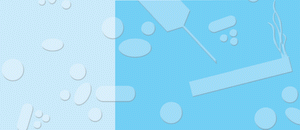

Der Weg in die Suchterkrankung umfasst vier Phasen:
Meist ist einfach nur Neugier im Spiel oder man erwartet den besonderen, einmaligen Kick.
Im 2. Stadium werden Rauschgifte gezielt als Verstärker für positive Gefühle und Sinneswahrnehmungen eingesetzt oder um Probleme zu vergessen.
In diesem Stadium erhöhen die Konsumenten schrittweise die Dosis. Allmählich beherrscht das Verlangen danach sämtliche Gedanken. Es kommt zu ersten körperlichen Ausfallerscheinungen.
Zusätzlich zur seelischen Abhängigkeit entwickelt sich eine körperliche. Wird dem Körper die Droge vorenthalten, kommt es zu schmerzhaften Entzugserscheinungen, zum Beispiel:
| Angstzustände | |
| Schlaflosigkeit | |
| innere Unruhe | |
| Schweißausbrüche | |
| Schüttelfrost und Fieber | |
| Glieder- und Muskelschmerzen |
